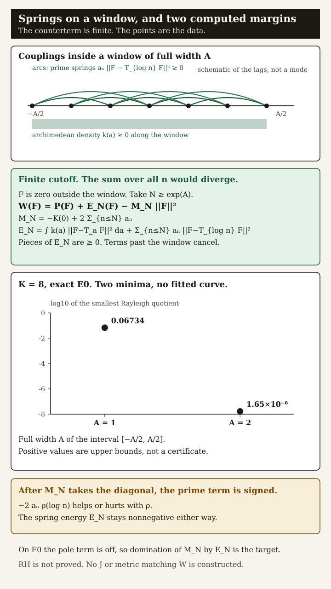
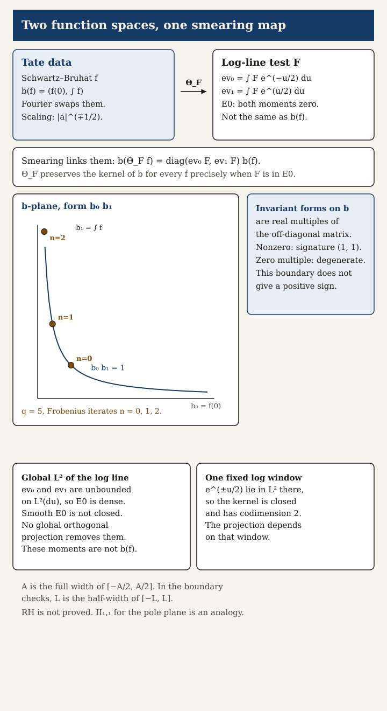
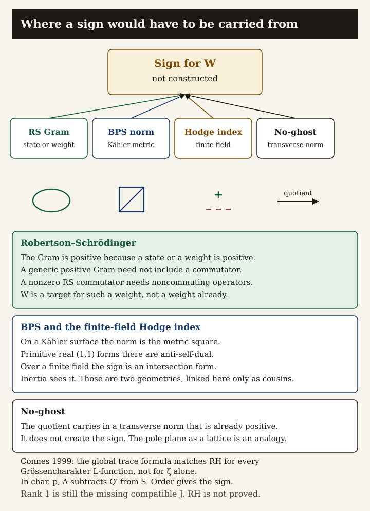

Where a sign for the Weil form would have to come from
The Riemann Hypothesis is not proved.
Structural refinements and consistency tests from the night of 6 Nov 2026. No new independent positivity theorem. No ample class, compatible complex structure, or metric that reproduces the Weil form was constructed.
Analogy first
Weil’s form wants to be the energy of a collection of springs, minus a counterterm that grows as more primes enter the window. Every spring we can write down is nonnegative. The open question is whether those springs dominate the counterterm for every test function. That comparison is the target. A numerical margin that shrinks toward zero tells you the balance is tight. It does not certify the inequality, and it does not refute it.
Several famous positivity machines have a family resemblance to this picture: a quantum covariance, a Bogomolny bound, the Hodge index on a surface over a finite field, and the no-ghost theorem. They are cousins. They are not one formula, and none of them has been built for the zeta function.
1. Springs and the counterterm
Nonnegative springs
On a window, for real test functions,
W(F) = P(F) + EN(F) − MN ||F||2.
F is zero outside a window of full width A, and N ≥ eA. EN adds the archimedean pieces ∫ k(a) ||F − TaF||2 da and the prime pieces an ||F − Tlog nF||2 for n ≤ N. Each is ≥ 0. The counterterm is the finite sum MN = −K(0) + 2 Σn≤N an. The sum over all n would diverge. Couplings that leave the window cancel. On E0 the pole term is off, so positivity is spring domination of this finite counterterm.
Signed net prime term
Group the same quadratic form the other way and the diagonal sits inside MN. What remains of each prime n ≤ N is
−2 an ρ(log n), ρ(b) = ⟨F, TbF⟩ / ||F||2.
The archimedean density still contributes through (2 − 2ρ) ≥ 0. The prime term helps or hurts with the sign of the autocorrelation. That sign is not the spring energy.

Figure 1. Couplings on the window, the finite identity with MN, and two K = 8 points with no fitted curve. Upper bounds, not a certificate. Download: SVG.
An explicit anharmonic functional has Hessian at the origin equal to W. Away from the origin, for a quartic coupling λ ≥ 0, the Hessian is W plus a nonnegative term coming from that potential. The Hessian stays quadratic in the variation. A Hessian identity restates W. It does not sign it.
2. The boundary is hyperbolic
Tate’s two boundary numbers, the value at 0 and the integral, are moved by the Fourier transform (they swap) and by unitary scaling (they are multiplied by opposite powers of |a|). The only Hermitian form on those two numbers invariant under both moves is a real multiple of the off-diagonal form. Nonzero, it has signature (1, 1). Zero, it is degenerate. Boundary data do not give a positive sign.
Global L², on the log line
The moments ev0(F) and ev1(F) are unbounded on L²(du), so E0 is dense and smooth functions in E0 are not closed. There is no global orthogonal projection that removes them. These moments are not Tate’s b(f).
One fixed log-line window
There both exponentials are square-integrable, so the kernel is closed and has codimension 2. The projection depends on the window.

Figure 2. Tate’s b(f) and the log-line moments, linked by smearing. Amber points are q = 5, n = 0, 1, 2. Download: SVG.Optional motion. Unitary scaling runs along a hyperbola of constant b₀ b₁. If your system asks for reduced motion, the point stays still. The static figure above is the record.
The moving point is the only animation on this page.
The operator L = ∂² − 1/4 sends compactly supported smooth functions bijectively onto E0 inside that class and preserves support hulls. That is Connes–Consani 2021, Lemma 3.3, already prior. On a fixed window, self-adjoint realizations of the dilation still depend on boundary conditions of the domain. A real test function defines a self-adjoint convolution only when it equals its own sharp involution.
3. Cousins, not one mechanism
Robertson–Schrödinger
A covariance Gram is positive because a state or a weight is positive. A generic positive Gram need not include a commutator. A nonzero Robertson–Schrödinger commutator needs noncommuting operators. An independent positive functional may still be commutative. W is unbounded, so a covariance realization would be a weight on test functions, not a normalized state on bounded translations. That positivity is not known: W is the target, not a weight already.
BPS and Hodge, two geometries
On a Kähler surface, primitive real (1,1) forms are anti-self-dual, and the norm comes from the metric. On an algebraic surface over a finite field, the Hodge index is an intersection form: one positive direction, the rest negative. Those are related architectures. They are not the same theorem. The determinant of a block can be positive while the block is negative definite; inertia is the sign.
No-ghost
The theorem transports positivity from a transverse space that is already positive. It does not create the sign. The pole plane as a Lorentzian II₁,₁ lattice is an analogy. No such arithmetic lattice is constructed.
What would count
A map from window test functions in E0 into a Hilbert space, or a semidefinite quotient, with norm squared exactly equal to W, is Weil positivity. That existence statement is the hypothesis, restated. Extra demands — an independent reason for the norm, scaling and window consistency, a global build from Euler factors and gamma data, failure on Davenport–Heilbronn — are criteria for a useful construction. They are not theorems that the hypothesis automatically provides.

Figure 3. Four architectures point at a sign for W that is not constructed. Download: SVG.
Precision second
Exact. For F zero outside a window of width A and N ≥ eA, W = P + EN − MN ||F||2 with MN = −K(0) + 2 Σn≤N an. The uncutoff sum diverges. Prime spring energy is ≥ 0. The net prime contribution after MN is signed.
Exact. The invariant form on Tate’s b(f) is hyperbolic or zero. Log-line moments are a different space, linked by smearing. On that log line, E0 is dense in L² and not closed; on one window it is closed of codimension 2.
Exact finite-field control. On E×E the intersection form splits as a hyperbolic boundary term plus a perpendicular Gram. That Gram is negative semidefinite precisely for Hasse traces. A positive determinant does not mean a positive form. The Frobenius samples obey the same diagonal scaling law and are not continuous moments.
Numerical, not certified. K = 8 Galerkin minima of W on the exact-E0 basis are about 0.067 at full width A = 1 and about 1.7×10⁻⁸ at A = 2. Positive minima are upper bounds. They do not control the limit in the basis size. Negative Rayleigh quotients in the session notes are strong witnesses inside that arithmetic. Call one certified only with a rigorous error bound.
Prior literature, not a new theorem. The archimedean Lévy kernel, the L-bijection of Connes–Consani, the characteristic-p projection order in Connes 1999 (ΔΛ subtracts Q′Λ,0 from SΛ; the global trace formula is equivalent to RH for all Grössencharakter L-functions), the archimedean Sonin comparison of Connes–Consani 2021, the Hodge index on C×C (used in Weil’s RH for curves), and the no-ghost theorem are cited, not reproved.
Open. An independent map whose square is W. A compatible J whose metric is W. Deninger’s positive leafwise star. A semilocal energy inequality. Rank 1 of the atlas is unchanged: the Kähler triple, and the missing J over ℚ.
Not claimed. Trace-norm leakage cannot be negative; the draft test that looked for a negative leakage was not run. The ratio of completed zeta values Λ(1/2−it)/Λ(1/2+it) is identically 1 by the functional equation, so it has no group delay. The local archimedean phase delay remains the kernel K. Vacuum spectral density is not asserted. Theta functions are not asserted to change sign at the zeros. Torsion corrections are convention-dependent. Clifford multiplication exists for an indefinite metric, so it is not a source of positivity.
Use this as a prompt
The reusable instructions for a later pass are in the repository at notes/v119/OVERVIEW_PROMPT.md. The corrected narrative, the source notes, the limitations file, and the scripts are beside it. Raw session folders are archived under provenance and are marked superseded.